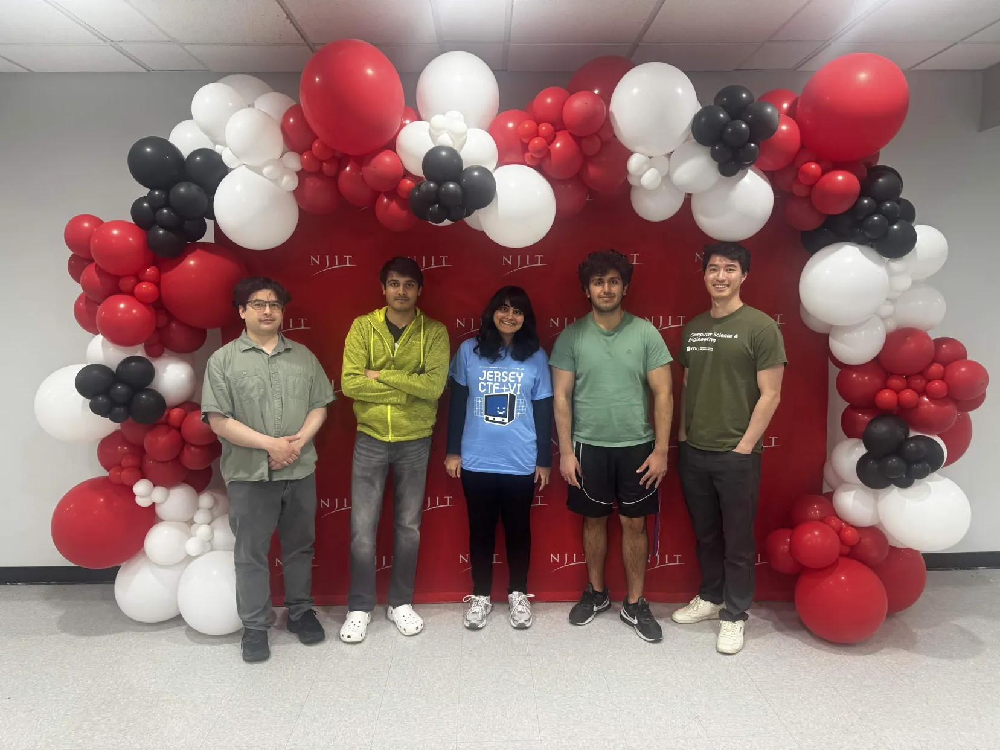
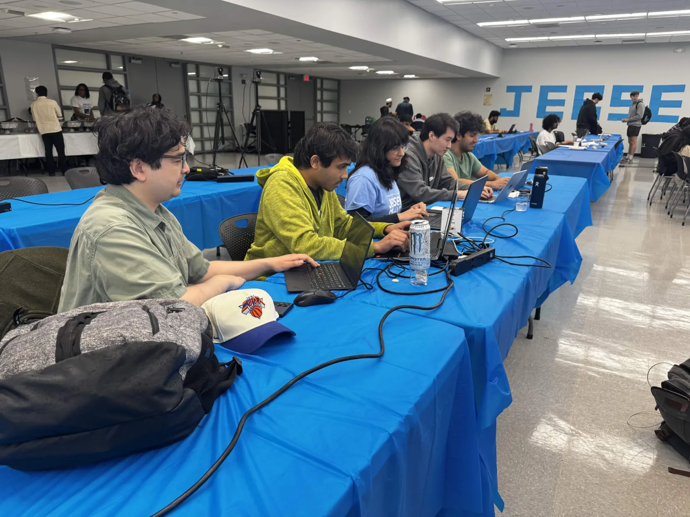

JerseyCTF VI.
4th place in Academic Division · 1,300+ participants
International competition · April 18–19, 2026


Writeups
Challenge walkthroughs and original assets.
Recovered Signal File
Forensics and encoding
Read writeup
Decode a recovered transmission with Base64 and a Caesar shift to reveal the flag.
qaStaH nuq Forensics and network analysis Read writeupFilter the packet capture to one HTTP exchange, then decode its response body.
Fix Your Ship Digital forensics and file repair Read writeupRepair a PNG, JPEG, and MP4, then combine the clues in the recovered files.
Relay Artifact TX-7 Cryptography and RSA Read writeupExploit a shared RSA prime to recover the private key and decrypt the relay.